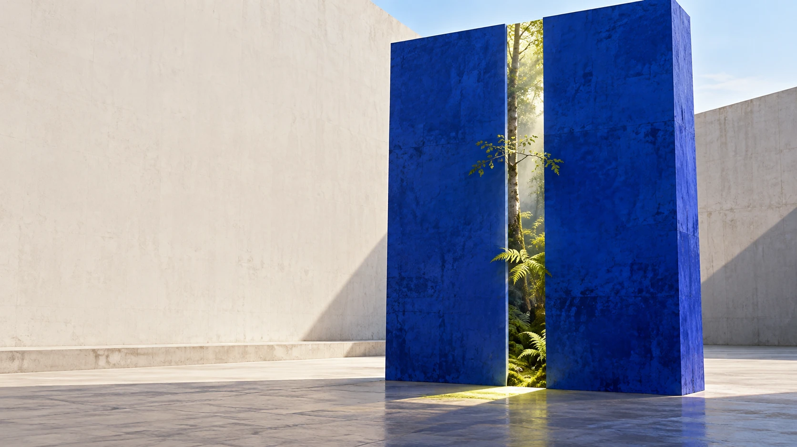
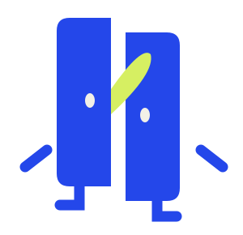
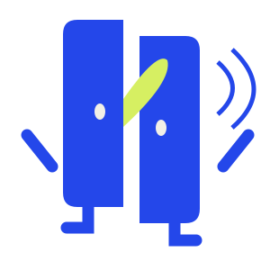
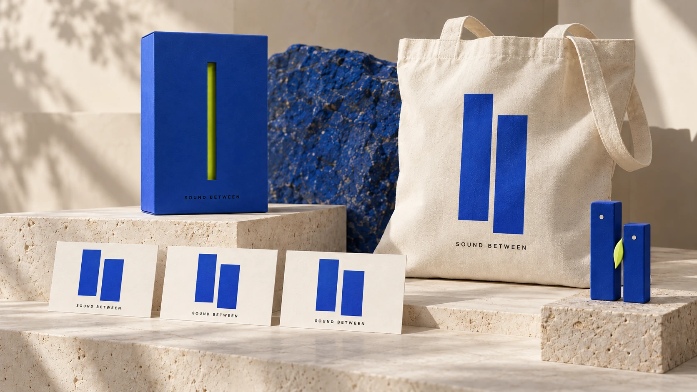
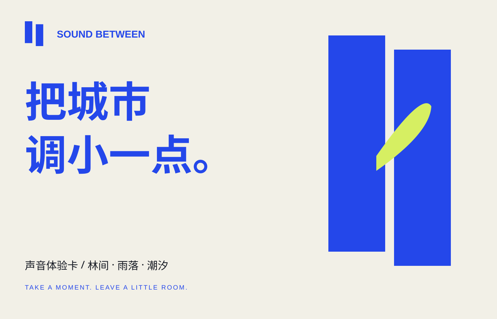

01 / THE INVITATION
城市没有静音键。
但你可以，留一道缝。
让叶片、雨点和潮水，从日程的缝隙里进来。声隙把看不见的声音，变成一个可以走近的入口。

02 / THREE SMALL ESCAPES
此刻，你想去哪里？
不用走远。
只要按下播放。
SOUNDSCAPE / 01
给念头，
留一条小路。
细碎的叶声与轻柔鸟鸣，组成一个向内走的入口。
概念合成音景 · 点击后播放 · 随时可停止
03 / A SYSTEM OF OPENINGS
同一道缝。
三种抵达。
每一张海报，
都是一句给自己的邀请。
04 / THE VISUAL LANGUAGE
把余地，
做成一个符号。
两块形体，一道空白。
标识、空间和角色，共用一个起点。
钴蓝是城市的平面，微光绿是从中长出的生机。留白成为识别的一部分。
MEET XI-ZAI / 隙仔
它不催你出发。
它替你留个位置。
隙仔是声隙的图形伙伴。错开的身体、安静的眼睛和中间的小叶片，让“留一道缝”成为一个可亲近的形象。

02 / 听见了05 / TAKE A LITTLE ROOM WITH YOU
把一点余地，带走。
声音体验卡 / 随身袋 / 展示套装
概念物料，尚未实体打样


FROM SPACE TO POCKET
不用把安静，
留在原地。
一张卡负责邀请，一面背卡说明体验步骤。结构适合延伸到折页、票卡与数字封面。
上方物料为 AI 概念展示；左侧为独立矢量平面设计。
06 / THE BRAND IN MOTION
一封用声音写的邀请。
原创概念短片
动态图形 / 场景视觉 / 合成声音
PROJECT NOTES / 概念项目说明
从一个符号，
到一段完整体验。
这是一次全新自主品牌概念创作，以“声音如何被看见”为命题，将同一个窄缝结构贯穿标识、IP、场景、传播物料与网页体验。
本项目由 AI 协作制作。场景与物料展示图使用 imagegen；标识、IP、排版及交互由矢量与代码构建，音景为程序合成。空间、包装尚未打样，尚无真实投放或用户验证。
阅读完整设计案例 PDF ↗